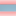

<!doctype html>
<html lang="en">
    <head>
        <meta charset="utf-8">
        <meta http-equiv="X-UA-Compatible" content="IE=edge">
        <meta name="viewport" content="initial-scale=1,user-scalable=no,maximum-scale=1,width=device-width">
        <meta name="mobile-web-app-capable" content="yes">
        <meta name="apple-mobile-web-app-capable" content="yes">
        <link rel="stylesheet" href="css/leaflet.css">
        <link rel="stylesheet" href="css/L.Control.Layers.Tree.css">
        <link rel="stylesheet" href="css/L.Control.Locate.min.css">
        <link rel="stylesheet" href="css/qgis2web.css">
        <link rel="stylesheet" href="css/fontawesome-all.min.css">
        <link rel="stylesheet" href="css/leaflet.photon.css">
        <link rel="stylesheet" href="css/leaflet-measure.css">
        <style>
        html, body, #map {
            width: 100%;
            height: 100%;
            padding: 0;
            margin: 0;
        }
        </style>
        <title></title>
    </head>
    <body>
        <div id="map">
        </div>
        <script src="js/qgis2web_expressions.js"></script>
        <script src="js/leaflet.js"></script>
        <script src="js/L.Control.Layers.Tree.min.js"></script>
        <script src="js/L.Control.Locate.min.js"></script>
        <script src="js/leaflet.rotatedMarker.js"></script>
        <script src="js/leaflet.pattern.js"></script>
        <script src="js/leaflet-hash.js"></script>
        <script src="js/Autolinker.min.js"></script>
        <script src="js/rbush.min.js"></script>
        <script src="js/labelgun.min.js"></script>
        <script src="js/labels.js"></script>
        <script src="js/leaflet.photon.js"></script>
        <script src="js/leaflet-measure.js"></script>
        <script src="data/RIESGOS_1.js"></script>
        <script src="data/LINDERO_2.js"></script>
        <script src="data/PUNTOS_3.js"></script>
        <script src="data/CALLES_4.js"></script>
        <script>
        var highlightLayer;
        function highlightFeature(e) {
            highlightLayer = e.target;

            if (e.target.feature.geometry.type === 'LineString' || e.target.feature.geometry.type === 'MultiLineString') {
              highlightLayer.setStyle({
                color: 'rgba(255, 255, 0, 1.00)',
              });
            } else {
              highlightLayer.setStyle({
                fillColor: 'rgba(255, 255, 0, 1.00)',
                fillOpacity: 1
              });
            }
        }
        var map = L.map('map', {
            zoomControl:false, maxZoom:28, minZoom:1
        }).fitBounds([[-3.2569317275000755,-79.96379997011515],[-3.2556334640639824,-79.96135323336756]]);
        var hash = new L.Hash(map);
        map.attributionControl.setPrefix('<a href="https://github.com/tomchadwin/qgis2web" target="_blank">qgis2web</a> &middot; <a href="https://leafletjs.com" title="A JS library for interactive maps">Leaflet</a> &middot; <a href="https://qgis.org">QGIS</a>');
        var autolinker = new Autolinker({truncate: {length: 30, location: 'smart'}});
        // remove popup's row if "visible-with-data"
        function removeEmptyRowsFromPopupContent(content, feature) {
         var tempDiv = document.createElement('div');
         tempDiv.innerHTML = content;
         var rows = tempDiv.querySelectorAll('tr');
         for (var i = 0; i < rows.length; i++) {
             var td = rows[i].querySelector('td.visible-with-data');
             var key = td ? td.id : '';
             if (td && td.classList.contains('visible-with-data') && feature.properties[key] == null) {
                 rows[i].parentNode.removeChild(rows[i]);
             }
         }
         return tempDiv.innerHTML;
        }
        // modify popup if contains media
        function addClassToPopupIfMedia(content, popup) {
            var tempDiv = document.createElement('div');
            tempDiv.innerHTML = content;
            var imgTd = tempDiv.querySelector('td img');
            if (imgTd) {
                var src = imgTd.getAttribute('src');
                if (/\.(jpg|jpeg|png|gif|bmp|webp|avif)$/i.test(src)) {
                    popup._contentNode.classList.add('media');
                    setTimeout(function() {
                        popup.update();
                    }, 10);
                } else if (/\.(mp3|wav|ogg|aac)$/i.test(src)) {
                    var audio = document.createElement('audio');
                    audio.controls = true;
                    audio.src = src;
                    imgTd.parentNode.replaceChild(audio, imgTd);
                    popup._contentNode.classList.add('media');
                    setTimeout(function() {
                        popup.setContent(tempDiv.innerHTML);
                        popup.update();
                    }, 10);
                } else if (/\.(mp4|webm|ogg|mov)$/i.test(src)) {
                    var video = document.createElement('video');
                    video.controls = true;
                    video.src = src;
                    video.style.width = "400px";
                    video.style.height = "300px";
                    video.style.maxHeight = "60vh";
                    video.style.maxWidth = "60vw";
                    imgTd.parentNode.replaceChild(video, imgTd);
                    popup._contentNode.classList.add('media');
                    // Aggiorna il popup quando il video carica i metadati
                    video.addEventListener('loadedmetadata', function() {
                        popup.update();
                    });
                    setTimeout(function() {
                        popup.setContent(tempDiv.innerHTML);
                        popup.update();
                    }, 10);
                } else {
                    popup._contentNode.classList.remove('media');
                }
            } else {
                popup._contentNode.classList.remove('media');
            }
        }
        var zoomControl = L.control.zoom({
            position: 'topleft'
        }).addTo(map);
        L.control.locate({locateOptions: {maxZoom: 19}}).addTo(map);
        var measureControl = new L.Control.Measure({
            position: 'topleft',
            primaryLengthUnit: 'meters',
            secondaryLengthUnit: 'kilometers',
            primaryAreaUnit: 'sqmeters',
            secondaryAreaUnit: 'hectares'
        });
        measureControl.addTo(map);
        document.getElementsByClassName('leaflet-control-measure-toggle')[0].innerHTML = '';
        document.getElementsByClassName('leaflet-control-measure-toggle')[0].className += ' fas fa-ruler';
        var bounds_group = new L.featureGroup([]);
        function setBounds() {
        }
        map.createPane('pane_OpenStreetMap_0');
        map.getPane('pane_OpenStreetMap_0').style.zIndex = 400;
        var layer_OpenStreetMap_0 = L.tileLayer('https://tile.openstreetmap.org/{z}/{x}/{y}.png', {
            pane: 'pane_OpenStreetMap_0',
            opacity: 1.0,
            attribution: '',
            minZoom: 1,
            maxZoom: 28,
            minNativeZoom: 0,
            maxNativeZoom: 19
        });
        layer_OpenStreetMap_0;
        map.addLayer(layer_OpenStreetMap_0);
        function pop_RIESGOS_1(feature, layer) {
            layer.on({
                mouseout: function(e) {
                    for (var i in e.target._eventParents) {
                        if (typeof e.target._eventParents[i].resetStyle === 'function') {
                            e.target._eventParents[i].resetStyle(e.target);
                        }
                    }
                },
                mouseover: highlightFeature,
            });
            var popupContent = '<table>\
                    <tr>\
                        <th scope="row">RIESGO</th>\
                        <td>' + (feature.properties['RIESGO'] !== null ? autolinker.link(String(feature.properties['RIESGO']).replace(/'/g, '\'').toLocaleString()) : '') + '</td>\
                    </tr>\
                    <tr>\
                        <th scope="row">ÁREA Ha</th>\
                        <td>' + (feature.properties['ÁREA Ha'] !== null ? autolinker.link(String(feature.properties['ÁREA Ha']).replace(/'/g, '\'').toLocaleString()) : '') + '</td>\
                    </tr>\
                    <tr>\
                        <th scope="row">PERÍMETRO</th>\
                        <td>' + (feature.properties['PERÍMETRO'] !== null ? autolinker.link(String(feature.properties['PERÍMETRO']).replace(/'/g, '\'').toLocaleString()) : '') + '</td>\
                    </tr>\
                    <tr>\
                        <th scope="row">VIDEO</th>\
                        <td>' + (feature.properties['VIDEO'] !== null ? autolinker.link(String(feature.properties['VIDEO']).replace(/'/g, '\'').toLocaleString()) : '') + '</td>\
                    </tr>\
                </table>';
            var content = removeEmptyRowsFromPopupContent(popupContent, feature);
			layer.on('popupopen', function(e) {
				addClassToPopupIfMedia(content, e.popup);
			});
			layer.bindPopup(content, { maxHeight: 400 });
        }

        function style_RIESGOS_1_0(feature) {
            switch(String(feature.properties['RIESGO'])) {
                case 'ALTO':
                    return {
                pane: 'pane_RIESGOS_1',
                opacity: 1,
                color: 'rgba(128,14,16,1.0)',
                dashArray: '',
                lineCap: 'butt',
                lineJoin: 'miter',
                weight: 1.0, 
                fill: true,
                fillOpacity: 1,
                fillColor: 'rgba(228,26,28,1.0)',
                interactive: true,
            }
                    break;
                case 'MEDIO':
                    return {
                pane: 'pane_RIESGOS_1',
                opacity: 1,
                color: 'rgba(128,14,16,1.0)',
                dashArray: '',
                lineCap: 'butt',
                lineJoin: 'miter',
                weight: 1.0, 
                fill: true,
                fillOpacity: 1,
                fillColor: 'rgba(255,127,0,1.0)',
                interactive: true,
            }
                    break;
            }
        }
        map.createPane('pane_RIESGOS_1');
        map.getPane('pane_RIESGOS_1').style.zIndex = 401;
        map.getPane('pane_RIESGOS_1').style['mix-blend-mode'] = 'normal';
        var layer_RIESGOS_1 = new L.geoJson(json_RIESGOS_1, {
            attribution: '',
            interactive: true,
            dataVar: 'json_RIESGOS_1',
            layerName: 'layer_RIESGOS_1',
            pane: 'pane_RIESGOS_1',
            onEachFeature: pop_RIESGOS_1,
            style: style_RIESGOS_1_0,
        });
        bounds_group.addLayer(layer_RIESGOS_1);
        map.addLayer(layer_RIESGOS_1);
        function pop_LINDERO_2(feature, layer) {
            layer.on({
                mouseout: function(e) {
                    for (var i in e.target._eventParents) {
                        if (typeof e.target._eventParents[i].resetStyle === 'function') {
                            e.target._eventParents[i].resetStyle(e.target);
                        }
                    }
                },
                mouseover: highlightFeature,
            });
            var popupContent = '<table>\
                    <tr>\
                        <th scope="row">LONGITUD</th>\
                        <td>' + (feature.properties['LONGITUD'] !== null ? autolinker.link(String(feature.properties['LONGITUD']).replace(/'/g, '\'').toLocaleString()) : '') + '</td>\
                    </tr>\
                </table>';
            var content = removeEmptyRowsFromPopupContent(popupContent, feature);
			layer.on('popupopen', function(e) {
				addClassToPopupIfMedia(content, e.popup);
			});
			layer.bindPopup(content, { maxHeight: 400 });
        }

        function style_LINDERO_2_0() {
            return {
                pane: 'pane_LINDERO_2',
                opacity: 1,
                color: 'rgba(0,0,0,1.0)',
                dashArray: '',
                lineCap: 'square',
                lineJoin: 'bevel',
                weight: 1.0,
                fillOpacity: 0,
                interactive: true,
            }
        }
        map.createPane('pane_LINDERO_2');
        map.getPane('pane_LINDERO_2').style.zIndex = 402;
        map.getPane('pane_LINDERO_2').style['mix-blend-mode'] = 'normal';
        var layer_LINDERO_2 = new L.geoJson(json_LINDERO_2, {
            attribution: '',
            interactive: true,
            dataVar: 'json_LINDERO_2',
            layerName: 'layer_LINDERO_2',
            pane: 'pane_LINDERO_2',
            onEachFeature: pop_LINDERO_2,
            style: style_LINDERO_2_0,
        });
        bounds_group.addLayer(layer_LINDERO_2);
        map.addLayer(layer_LINDERO_2);
        function pop_PUNTOS_3(feature, layer) {
            layer.on({
                mouseout: function(e) {
                    for (var i in e.target._eventParents) {
                        if (typeof e.target._eventParents[i].resetStyle === 'function') {
                            e.target._eventParents[i].resetStyle(e.target);
                        }
                    }
                },
                mouseover: highlightFeature,
            });
            var popupContent = '<table>\
                    <tr>\
                        <th scope="row">id</th>\
                        <td>' + (feature.properties['id'] !== null ? autolinker.link(String(feature.properties['id']).replace(/'/g, '\'').toLocaleString()) : '') + '</td>\
                    </tr>\
                    <tr>\
                        <th scope="row">NORTE</th>\
                        <td>' + (feature.properties['NORTE'] !== null ? autolinker.link(String(feature.properties['NORTE']).replace(/'/g, '\'').toLocaleString()) : '') + '</td>\
                    </tr>\
                    <tr>\
                        <th scope="row">ESTE</th>\
                        <td>' + (feature.properties['ESTE'] !== null ? autolinker.link(String(feature.properties['ESTE']).replace(/'/g, '\'').toLocaleString()) : '') + '</td>\
                    </tr>\
                </table>';
            var content = removeEmptyRowsFromPopupContent(popupContent, feature);
			layer.on('popupopen', function(e) {
				addClassToPopupIfMedia(content, e.popup);
			});
			layer.bindPopup(content, { maxHeight: 400 });
        }

        function style_PUNTOS_3_0() {
            return {
                pane: 'pane_PUNTOS_3',
                radius: 4.0,
                opacity: 1,
                color: 'rgba(35,35,35,1.0)',
                dashArray: '',
                lineCap: 'butt',
                lineJoin: 'miter',
                weight: 1,
                fill: true,
                fillOpacity: 1,
                fillColor: 'rgba(31,120,180,1.0)',
                interactive: true,
            }
        }
        map.createPane('pane_PUNTOS_3');
        map.getPane('pane_PUNTOS_3').style.zIndex = 403;
        map.getPane('pane_PUNTOS_3').style['mix-blend-mode'] = 'normal';
        var layer_PUNTOS_3 = new L.geoJson(json_PUNTOS_3, {
            attribution: '',
            interactive: true,
            dataVar: 'json_PUNTOS_3',
            layerName: 'layer_PUNTOS_3',
            pane: 'pane_PUNTOS_3',
            onEachFeature: pop_PUNTOS_3,
            pointToLayer: function (feature, latlng) {
                var context = {
                    feature: feature,
                    variables: {}
                };
                return L.circleMarker(latlng, style_PUNTOS_3_0(feature));
            },
        });
        bounds_group.addLayer(layer_PUNTOS_3);
        map.addLayer(layer_PUNTOS_3);
        function pop_CALLES_4(feature, layer) {
            layer.on({
                mouseout: function(e) {
                    for (var i in e.target._eventParents) {
                        if (typeof e.target._eventParents[i].resetStyle === 'function') {
                            e.target._eventParents[i].resetStyle(e.target);
                        }
                    }
                },
                mouseover: highlightFeature,
            });
            var popupContent = '<table>\
                    <tr>\
                        <th scope="row">LONGITUD</th>\
                        <td>' + (feature.properties['LONGITUD'] !== null ? autolinker.link(String(feature.properties['LONGITUD']).replace(/'/g, '\'').toLocaleString()) : '') + '</td>\
                    </tr>\
                    <tr>\
                        <th scope="row">NOMBRE</th>\
                        <td>' + (feature.properties['NOMBRE'] !== null ? autolinker.link(String(feature.properties['NOMBRE']).replace(/'/g, '\'').toLocaleString()) : '') + '</td>\
                    </tr>\
                    <tr>\
                        <th scope="row">ESTADO</th>\
                        <td>' + (feature.properties['ESTADO'] !== null ? autolinker.link(String(feature.properties['ESTADO']).replace(/'/g, '\'').toLocaleString()) : '') + '</td>\
                    </tr>\
                    <tr>\
                        <th scope="row">JERARQUÍA</th>\
                        <td>' + (feature.properties['JERARQUÍA'] !== null ? autolinker.link(String(feature.properties['JERARQUÍA']).replace(/'/g, '\'').toLocaleString()) : '') + '</td>\
                    </tr>\
                </table>';
            var content = removeEmptyRowsFromPopupContent(popupContent, feature);
			layer.on('popupopen', function(e) {
				addClassToPopupIfMedia(content, e.popup);
			});
			layer.bindPopup(content, { maxHeight: 400 });
        }

        function style_CALLES_4_0() {
            return {
                pane: 'pane_CALLES_4',
                opacity: 1,
                color: 'rgba(166,206,227,1.0)',
                dashArray: '',
                lineCap: 'round',
                lineJoin: 'round',
                weight: 7.0,
                fillOpacity: 0,
                interactive: true,
            }
        }
        map.createPane('pane_CALLES_4');
        map.getPane('pane_CALLES_4').style.zIndex = 404;
        map.getPane('pane_CALLES_4').style['mix-blend-mode'] = 'normal';
        var layer_CALLES_4 = new L.geoJson(json_CALLES_4, {
            attribution: '',
            interactive: true,
            dataVar: 'json_CALLES_4',
            layerName: 'layer_CALLES_4',
            pane: 'pane_CALLES_4',
            onEachFeature: pop_CALLES_4,
            style: style_CALLES_4_0,
        });
        bounds_group.addLayer(layer_CALLES_4);
        map.addLayer(layer_CALLES_4);
        var overlaysTree = [
            {label: ' CALLES', layer: layer_CALLES_4},
            {label: ' PUNTOS', layer: layer_PUNTOS_3},
            {label: ' LINDERO', layer: layer_LINDERO_2},
            {label: 'RIESGOS<br /><table><tr><td style="text-align: center;"></td><td>ALTO</td></tr><tr><td style="text-align: center;"></td><td>MEDIO</td></tr></table>', layer: layer_RIESGOS_1},
            {label: "OpenStreetMap", layer: layer_OpenStreetMap_0, radioGroup: 'bm' },]
        var lay = L.control.layers.tree(null, overlaysTree,{
            //namedToggle: true,
            //selectorBack: false,
            //closedSymbol: '&#8862; &#x1f5c0;',
            //openedSymbol: '&#8863; &#x1f5c1;',
            //collapseAll: 'Collapse all',
            //expandAll: 'Expand all',
            collapsed: true,
        });
        lay.addTo(map);
        setBounds();
        resetLabels([layer_RIESGOS_1]);
        map.on("zoomend", function(){
            resetLabels([layer_RIESGOS_1]);
        });
        map.on("layeradd", function(){
            resetLabels([layer_RIESGOS_1]);
        });
        map.on("layerremove", function(){
            resetLabels([layer_RIESGOS_1]);
        });
        </script>        
    </body>
</html>
